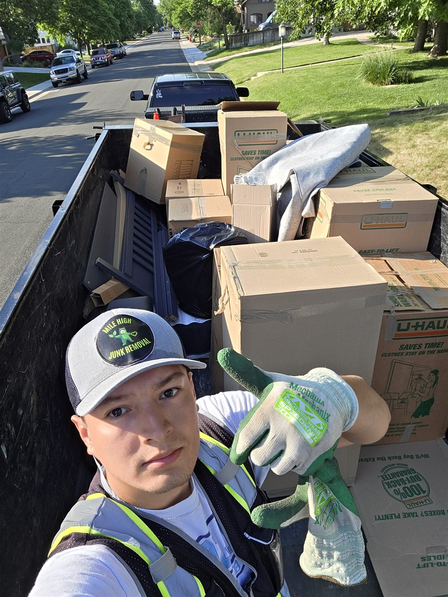

Checklists
Moving Checklist: What to Get Rid of Before You Move

Every move is a forced decision point — you're about to pay someone to carry your belongings across town or across the country, which is exactly the moment to ask whether each item is actually worth carrying. This checklist is built around that question, room by room, with enough lead time to actually act on it before moving day.
Three weeks out: start the sort
Go room by room and separate everything into keep, donate, and junk. Doing this early — well before boxes start appearing — keeps it from turning into a rushed, everything-gets-packed decision the night before the truck arrives.
Furniture that isn't making the cut
Furniture that doesn't fit the new place, or that you've simply been meaning to replace, shouldn't ride along out of inertia. If it's still in good shape, our furniture donation guide covers what local donation centers typically accept. If it's not, it's a straightforward pickup.
The garage and storage areas
Garages and basements tend to hold the things people are least attached to and most likely to finally let go of during a move — old tools, sports equipment, boxes that never got unpacked from the last move. This is usually where the bulk of a pre-move junk pickup comes from.
Appliances you're not taking
If the new place already has a washer, dryer, or fridge, the old ones need somewhere to go. Our appliance recycling guide covers what happens to them, including the Freon recovery process required for fridges and AC units.
One week out: schedule the pickup
Book your junk pickup for a few days before the movers, not the same day — that buffer gives you room if sorting runs long, and it means the movers are only handling things you're actually keeping. Our home cleanout service is priced by trailer space, so a partial-house purge costs a lot less than the whole home.
Moving day itself
By the time moving day arrives, everything left in the house should be something you're actually taking. If something gets left behind in the rush and needs to go, a quick follow-up pickup is easy to schedule — text a few photos and we'll take it from there, or book online to lock in your date.
Common questions
Moving checklist FAQ
How far before moving day should I start decluttering?
Two to three weeks out is a comfortable window — enough time to sort room by room without rushing, and enough buffer to schedule a junk pickup before the movers arrive.
Is it cheaper to get rid of things before a move than to move them?
Almost always. Movers typically charge by weight or by the hour, so hauling furniture or boxes you don't actually want at the new place costs you twice — once to move it, and again whenever you eventually get rid of it there.
Can you schedule a pickup close to my actual move date?
Yes, we regularly work around move timelines and can often do same-day or next-day pickups, so you're not stuck holding onto discard piles until the last minute.
What should I do with furniture that doesn't fit the new place?
If it's still in good condition, donation is the better outcome — see our furniture donation guide for what's typically accepted around Denver. Anything not donatable, we'll haul away.
Do you handle pickups at apartments or buildings with limited access?
Yes — loading docks, freight elevators, and tight stairwells are routine for us. Just mention the building type when you book so we can plan for it.
What if I'm moving out of state and can't be there for the pickup?
As long as access is arranged and it's clear what's being left behind, we can complete a pickup without you on-site — this comes up often with long-distance moves.
Reclaim your space today
Call or text 303-990-1812 for a free estimate — let us haul your stress away.